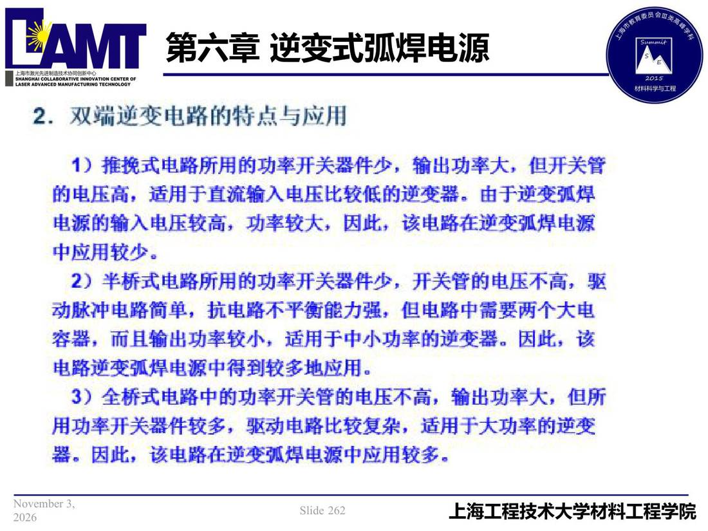

06 第6章 逆变式弧焊电源/p262 2.双端逆变电路特点与应用
p262 2.双端逆变电路特点与应用
📄 原文：📄 弧焊电源 课件（PDF 第 262 页）（幻灯片 262/273；PDF 第 262 页）
2.双端逆变电路特点与应用

讲义原文
本页在课件中是纯图文版式（无文字层），内容以页图与下面的 OCR 文本为准。
页面文字（OCR 机读，可能有错字，以页图为准）
2.双端逆变电路特点与应用 1） 推挽式电路所用的功率开关件少，输出功率大，但开关管 前电压高，适用于直流输入电压比较低逆变器。由于逆变弧焊 电源输入电压较高，功率较大，因此，该电路在逆变弧焊电源 中应用较少。 2） 半桥式电路所用的功率开关器件少，开关管电压不高，驱 动脉冲电路简单，抗电路不平衡能力强，但电路中需要两个大电 容 ，而且输出功率较小，适用于中小功率逆变蛊。因此，该 电路逆变弧焊电源中得到较多地应用。 3）全桥式电路中功率开关管的电压不高，输出功率大，但所 用功率开关器件较多，驱动电路比较复杂，适用于大功率逆变 器。因此，该电路在逆变弧焊电源中应用较多。